Et bienvenue sur ce tutoriel qui, comme son nom l'indique, a pour but de vous enseigner comment reproduire ses dessins sur son ordinateur grâce à Inkscape. Au programme, nous allons apprendre à faire des nœuds, des chemins et tout un tas d'autres choses merveilleuses. :)
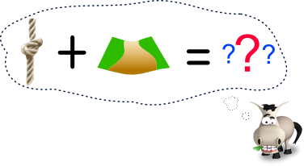
Euh... non ! N'allez pas m'imaginer un chemin noué ou je ne sais quoi. :lol: Il s'agit du vocabulaire spécifique au logiciel, nous allons le voir plus tard. ;)
Ce tutoriel s'adresse en particulier aux personnes qui voudraient faire passer leurs dessins manuscrits sur l'ordinateur (en dessins vectoriels) ou simplement repasser leurs croquis, exemple :
Pour commencer, il faut savoir que Inkscape est un logiciel de dessin se reposant sur les vecteurs (ou plutôt "un logiciel [...] d'édition de graphismes vectoriels" comme le dit si bien le site officiel). Ce dont nous avons besoin de savoir est que ce logiciel est libre (gratuit), multi-plateforme et qu'il utilise le format de fichier SVG (Scalable Vector Graphic). Tout le tutoriel reposera sur le principe et l'utilisation des "courbes de Bézier" (que nous verrons plus tard), il vous sera donc nécessaire de bien comprendre leurs fonctionnement dans un premier temps.
Il est tout à fait normal que vous ne compreniez pas entièrement le paragraphe précédent, je vous invite donc à le relire avec ces quelques définitions puisque, rappelons-le, nous partons de zéro ;)
En plus d'être libre, Inkscape a l'avantage d'être complet et puissant. J'entend par là que ce dernier ne devrait pas limiter votre créativité. De plus, le format SVG nous permettra d'éditer nos traits sans perte de qualité lors d'éventuels agrandissements :
Donc, imaginons que votre croquis tienne sur un post-it, vous aurez la possibilité d'agrandir votre vectorisation (votre rendu final) à souhait ; il n'est pas exagéré de dire que nous pourrions même l'imprimer pour le coller sur la façade d'un grand supermarché ;) . Ce ne serait pas possible avec une image matricielle (".png", ".gif", ".jpg" etc.), voyez par vous mêmes :
Inkscape m'a l'air bien, mais si tout repose sur les vecteurs, il n'arrivera pas un moment où nous nous retrouverons "bloqué" face à cela ? :euh:
Dans le cadre de ce tutoriel, le résultat est destiné à être utilisé avec un autre logiciel sans quoi vous obtiendrez un dessin totalement vectoriel. Ce n'est donc pas un problème en soit, disons qu'Inkscape est l'un des crayon de votre trousse ;)
Si vous avez des questions ou voulez plus de renseignements sur Inkscape, je vous conseille fortement de vous rendre sur la FAQ ("dépôt" de réponses aux question fréquemment posées) du site officiel. Ne pensez pas que je vous donne ce lien pour me débarrasser d'un genre "Cherchez par là, vous trouverez votre réponse parmi ces quelques centaines de lignes" :lol: . J'ai beaucoup utilisé ce genre de documentation et je parle donc en connaissance de cause, d'ailleurs, je vous conseille d'ajouter ce site dans vos marques-pages le temps de votre apprentissage ;)
S'approprier Inkscape
Ainsi, c'est décidé, vous voulez mettre la main sur ce merveilleux logiciel ?! ... Je prend votre silence pour un oui. :-° Pour ce, rien de plus simple, il suffit d'aller chercher le fichier souhaité ici ! Comme je l'ai dit précédement, plusieurs cas se présentent à vous :
J'utilise Windows
Je cherche cette ligne : Windows — .exe installer, portable, 7zip Je clique sur ".exe installer" puis je lance cet exécutable une fois téléchargé ou je télécharge le .7zip si je sais décompresser.
J'utilise Mac OS X
Je cherche cette ligne : OS X 10.6, Snow Leopard — Universal .dmg Je clique sur ".dmg" puis je lance l'application une fois téléchargée.
J'utilise Linux
Je cherche ces ligne : Archive des sources — .gz. Référez-vous au fichier README pour l'installation, ou à la page CompilingInkscape pour de plus de détails. Archive des sources au format Bzip — .bz2. Référez-vous au fichier README pour l'installation, ou à la page CompilingInkscape pour de plus de détails. Je clique sur la version voulue et suis les instructions. Notez que Inkscape devrait être disponible depuis la plupart des dépôts.
Trop fastoche ! Inkscape est opérationnel chez moi ! Paré à l'abordage, Capt'ain :pirate:
J'attire votre attention sur le fait que ces définitions ne sont pas précises, cependant, elles suffisent pour comprendre le tutoriel. Merci de me contacter pour toute modification jugée nécessaire.
Mais rassurez-vous, tout vous paraîtra plus clair lors de la pratique. ;)
Je pense qu'il serait plus sage de commencer le tutoriel en vous présentant le logiciel tel qu'il apparaît une fois lancé et de prendre nos repères concernant les outils que nous allons utiliser. Rassurez-vous, il n'y a pas grand chose à retenir pour suivre ce tutoriel donc tâchez de ne pas sauter cette étape. ;) Bien, voici Inkscape 0.48.1 au démarrage (configuré par défaut, c'est à dire, sans modification depuis l'installation) :
Au cours de ce tutoriel, vous allez être amené à utiliser l'interface d'Inkscape, pour comprendre correctement les instructions, vous aurez besoin du nom des barres de menu, les voici (de haut en bas, comme sur l'image précédente) :
Barre de menu.
Barre des commandes.
Boîte des contrôle d'outils.
... Et la barre à gauche est appelée "Boîte à outils". Bon, je ne vous demande pas de les retenir, mais en cas de problèmes, vous pouvez toujours revenir ici pour vous y retrouver. ;)
Bien, on a des logos d'outils un peu partout mais voici mis en évidence les outils sur lesquels vous êtes susceptible de cliquer lors de la création d'un line art (pour cette méthode).
Attention, cela ne veut pas dire qu'ils vous serviront tous ! Pour ne rien vous cacher, vous utiliserez moins d'un quart des outils non noircis.
Ne pas se servir des calques en infographie? Sacrilège :colere2: !
Pour ceux qui ne le savent pas, les calques sont des "feuilles transparentes" que l'on superpose pour obtenir un rendu final en infographie (un personnage avec, sur un calque la tête et sur l'autre, le corps, par exemple). Eh bien, pourquoi ne pas les utiliser? Simplement parce que nous n'appliquerons aucun effet sur notre line art, étant seulement composé de traits plus ou moins gros, que ce soit fait sur un ou plusieurs calques nous importe peu, tout simplement. ^^ Avant que je n'oublie, vous avez au centre une page au format A4. Celle-ci peut servir de repère mais rappelez-vous qu'en ".svg" on peut agrandir ou rétrécir une composition sans perte de qualité, aussi, peu importe si vous êtes en zoom 36562589% ou 1%. :p
Dès la prochaine partie nous passons à l'apprentissage de l'outil qui nous sera le plus utile, nous ferons notre premier TP un peu plus tard.
Dans ce tutoriel, vous allez voir que l'outil Bézier est à la base de tout, aussi, une fois que vous aurez compris son fonctionnement, vous serez déjà prêt à faire vos line arts à partir de vos esquisses ;) . Avant d'en arriver là, il faut d'abord comprendre ce qu'est l'outil, à quoi il sert et comment on l'utilise.
L'outil Bézier
Citation : Valt
- On a des matheux dans la salle ? ... ah bon ? que des zéros... Et comment je vais expliquer tout ça, moi ? >_
Bon, comme vous ne lisez pas ce tutoriel afin d'approfondir vos connaissances en maths (du moins, je ne crois pas :euh: ) et comme je n'ai moi même pas très envie de décorer la page de magnifiques équations, nous allons faire très synthétique... autour de dessins :) . Premièrement, l'outil Bézier est ce qui nous permettra de tracer nos contours, notre line art. Ensuite, l'outil Bézier, c'est cette petite icône sur la boîte à outil (barre de gauche) :
. Enfin, l'outil s'utilise de la manière suivante :
1 : Tracer des traits. 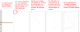 Faites vos tests, c'est important pour bien comprendre.
2: Modification de la forme générales 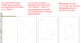 Vous pouvez remarquer qu'une erreur de tracé n'est donc pas grave, il suffira de replacer correctement les nœuds ;) . Vous pouvez aussi déplacer entièrement l'objet sans modifier chaque nœud. Pour ce, il vous suffira de sélectionner puis de déplacer le chemin grâce à "Sélectionner ou transformer des objets" (
) sur la boîte à outil (barre de gauche). De même, il est facile d'effectuer une rotation ou une réduction du chemin avec le même outil avec les flèches autour de la sélection :
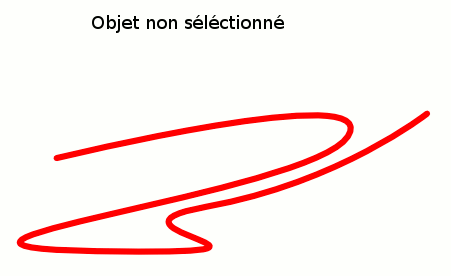
A partir de là, nous savons tracer des chemins avec l'outil Bézier et les modifier à souhait. Maintenant, nous allons voir comment arrondir un peu nos traits comme ci-dessus :
La méthode est simple, lorsque vous tracez un chemin avec l'outil Bézier, des nœuds sont présents aux extrémités :
Éditez le segment, déplacez-le en maintenant le clique droit enfoncé. Félicitations, vous venez d'incurver votre chemin :D . Entrainez-vous, essayez de dessiner quelque chose en faisant des formes grossières avec des traits droits puis modeler un peu mieux les formes avec ce que vous venez de découvrir. A partir de là, vous êtes déjà capable de produire un line art!
C'est bien beau tout ça , mais c'est laborieux et peu précis. Imaginons que j'ai à dessiner de l'herbe, ce ne sera pas facile ! Il n'existerait pas un autre moyen d'arrondir les chemins par hasard ?
Question pertinente ! J'ai de la chance de vous avoir chers élèves ;) . Il existe effectivement un moyen de modeler précisément vos traits exactement comme vous l'imaginez. En arrondissant vos chemins, vous avez dû noté que des petits traits apparaissaient, avec au bout, ce que l'on appelle des poignées (si ce n'est pas le cas, cliquez sur les nœuds afin de les faire apparaître) :
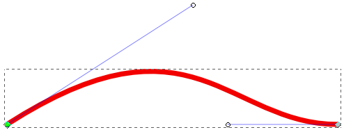
Essayez de bouger les poignées... Vous avez tout compris, elles servent à modifier l'allure du chemin, cela vous demandera un certain temps d'adaptation mais bientôt, épouser les formes de vos dessins sera un jeu d'enfant grâce à ces poignées.
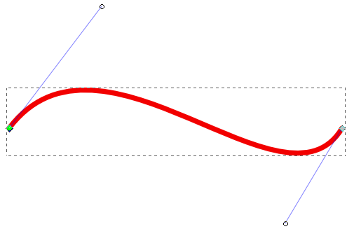
Les nœuds
Revenons un peu aux nœuds, vous savez ces petits marqueurs servant d'intermédiaire à chaque segment tracé sur un chemin. Si vous ne voyez toujours pas, je parle de ceux-là :
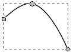
Remarquez qu'ils n'ont pas la même forme et donc pas les mêmes caractéristiques. Connaître leurs effets vous aidera surement lors de vos prochaines utilisations du logiciel :
Icône
Appellation
Description
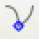
Nœud dur
C'est le nœud qui apparaîtra par défaut lorsque vous tracerez vos chemins. Il vous permet de déplacer les poignées librement.
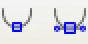
Nœud doux (simple ou symétrique)
Permet d'arrondir proprement vos courbes. Dans le cas où les poignées sont équidistantes du nœud, il est question du nœud doux symétrique.
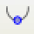
Nœud automatique
En appliquant un nœud automatique, Inkscape lui donnera des propriétés en fonctions des autres nœuds l'environnant.
Pour changer le type d'un nœud, il vous suffira de cliquer dessus en maintenant la touche "Ctrl" enfoncée ou bien d'utiliser les boutons de la barre des contrôles d'outils :
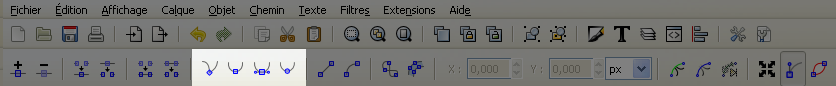
Bien sûr, il existe d'autres moyens de modifier les nœuds et leurs rôles dans un chemin mais il est inutile de surcharger le tutoriel. Maintenant, ce qui serait bien, c'est que vous fassiez quelques tests avec Inkscape pour mettre en pratique ce que vous avez appris. ;)
Couleurs, forme et taille
Certains se demandent peut être pourquoi le chemin qui figurait sur les images précédentes était rouge et épais alors que les vôtres sont noirs et fins. C'est tout simplement parce que j'ai changé les propriétés de remplissage et contour de mon objet (= mon chemin) après l'avoir séléctionné. Allez, jetez un œil ici :
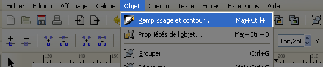
Notez qu'un magnifique panneau apparaît sur le côtés de l'interface d'Inkscape, comportant certaines propriétés de votre objet regroupées en 3 onglets :
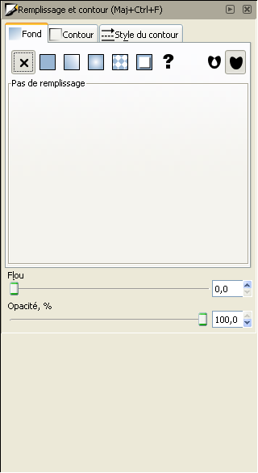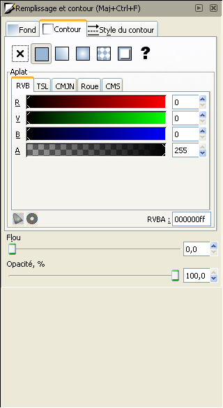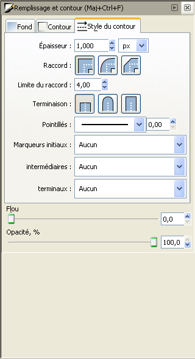
Je pense que les noms des options parlent d'eux-mêmes et qu'il n'est pas bien dur de deviner que, par exemple, en faisant augmenter la valeur de l'épaisseur qui est actuellement de "1,000" , votre chemin sera plus épais. Il faut cependant que vous sachiez une petite chose qui pourra nous être utile: un chemin est composé d'un contour et d'un fond, lors de vos changement de couleurs, ne vous trompez pas entre les deux.
Bien, vous savez maintenant utiliser l'outil avec brio. Dès la prochaine étape, nous utiliserons celui-ci pour créer notre line art, cependant, ne pensez pas que je vous en ai déjà suffisamment dévoilé. :-°
Bien, nous allons maintenant commencer notre premier line art avec Inkscape. Libre à vous de prendre n'importe quel dessin, pour ceux qui n'ont rien, je leurs propose de travailler sur un des miens afin d'obtenir ce genre de résultat :
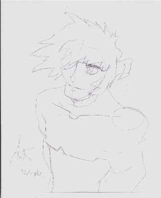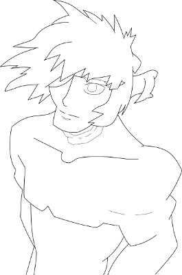
Dessin par Valt. Personnage original dans "Samurai Gun" créé par SONODA HIDEKI.
Le line art peut vous sembler petit, mais rappelez-vous que je pourrais l'agrandir à volonté du fait que je l'ai enregistré en ".svg". ;)
Importation de l'esquisse
Une fois que vous aurez choisi votre dessin (enregistré sur votre ordinateur grâce à un scanner, par exemple), il va vous falloir l'importer dans Inkscape. Rien de plus simple, faites "Fichier"->"Importer..."
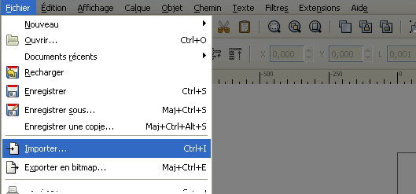
Si Inkscape vous laisse le choix entre incorporer ou lier l'importation, préférez l'option "Incorporer" car celle-ci vous permettra de ne pas vous encombrer de plusieurs fichiers lors d'éventuelle déplacement de fichier :
Citation : Entrée GDK pixbuf (Inkscape)
Incorporer génère un fichier SVG unique, mais plus volumineux. Lier crée une référence vers un fichier externe au document SVG qui doit être déplacé avec le fichier SVG.
Au boulot !
Vous avez appris à tracer des chemins, en modifier l'épaisseur, la forme etc. A présent, repassez vos coups de crayons au propre grâce au logiciel :
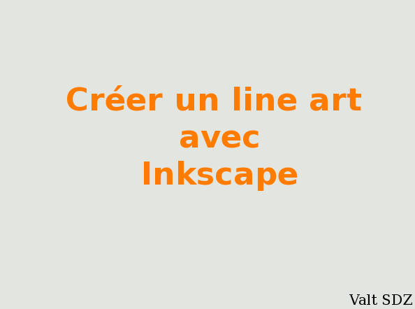
Prenez votre temps pour épouser correctement les formes de votre dessin, ne vous inquiétez pas si vos tracés ne coïncident pas totalement avec le dessin (au niveau des pointes des cheveux, par exemple), nous allons voir comment arranger tout cela plus tard. ;)
Sauvegardes et rendu final
N'oubliez pas de sauvegarder de temps en temps vos créations, il n'y a rien de plus enrageant que de perdre subitement son travail. Pour ce, rien de plus simple, ça se passe dans "Fichier" -> "Enregistrer sous...", vérifiez que le type de format sélectionné est bien du ".svg" (normalement par défaut). Ce fichier ".svg" pourra vous servir à apporter des modifications au line art ultérieurement alors gardez-le dans un coin de votre disque dur. ;)
Une fois que vous aurez fini, il y a de grandes chances que vous ayez besoin d'enregistrer votre line art dans un autre format que svg. Rien de plus simple, sélectionnez "Exporter en bitmap..." dans "Fichier", choisissez la taille et la destination en cliquant sur "Parcourir". Pour nommer votre image, vous devrez modifier le "path0000.png" dans dans "Nom de fichier".
Et voilà ! Vous savez créer des line art à partir de zéro... Mais ce n'est pas fini. :p Ayez une vue critique sur votre œuvre, vous ne trouvez pas qu'il manque quelques trucs comme par exemple de la variation dans les traits ?! J'aimerais vous dévoiler une petite technique pour améliorer les rendus de vos line art, et parfois même, vous simplifier la vie. Qui m'aime me suive vers la prochaine partie du tutoriel. :-°
... ou plutôt comment contourner un problème : le manque de liberté dans nos tracés ;) . Ici, nous allons apprendre à utiliser l'option "Contours en chemin" qui nous servira à donner plus de profondeur à nos line art. Je vous rassure, il vous suffira de cliquer sur "Contours en chemin" dans "Chemin" de la barre de menus. N'oubliez pas de sélectionner tous les traits auxquels vous souhaitez appliquer cette modification ! Et bien sûr, il existe un raccourci à cette option, je vous demande de le retenir car vous risquez d'y prendre goût. ;)
CTRL + ALT + C
Après avoir sélectionné vos traits et avoir appliqué l'option, prenez le temps de remarquer les changements :
Avant
Après
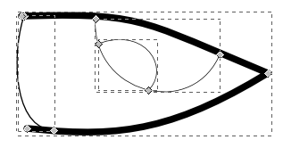
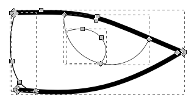
Vous venez de le constater par vous-même, après avoir fait CTRL+ALT+C, vos chemins possèdent plus de nœuds. De plus, ces nœuds se situent maintenant sur les contours de chemin et non plus au centre.
D'accord, mais notre line art garde exactement la même forme. :o
Parce que vous allez encore devoir mettre la main à la pâte ;) . Ces nouveaux nœuds vont vous donner plus de liberté vis-à-vis des formes de vos traits. Bougez-les un peu partout et constatez que vos contours sont encore plus modelables :
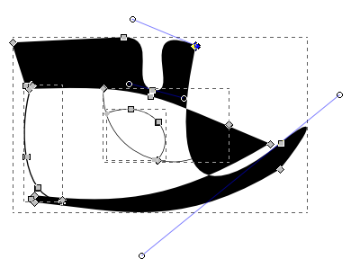
Mais bien sûr, agir de la sorte n'est pas dans notre intérêt. Il faut maintenant chercher à embellir notre line art, ça se passe exactement comme nous l'avons déjà vu donc je vous laisse faire. Voici ce que j'ai pu obtenir :
Chemins normaux
Contours en chemins
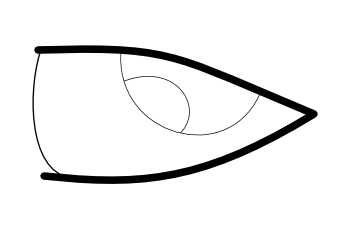
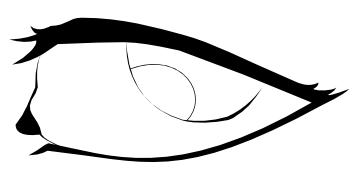
Eyh, mais ça ressemble à un œil !
Je ne vous l'avez pas dit? Mais voyons... ça se voit... non? :euh: Bon ! Tant que nous y somme, il y a quelque chose d'autre que je ne vous ai pas dit :
J'ai triché en ajoutant quelques nœuds. :-°
Mais je compte bien me rattraper en vous expliquant comment j'ai fait :ange: Rendez-vous à la prochaine partie : "Ajouter des nœuds"...
Enfin ! Voici la dernière étape du tutoriel qui vous permettra définitivement de modeler votre line art comme vous l'entendez. Au menu, nous allons voir comment :
Briser un chemin ou supprimer un segment de chemin entre deux nœuds.
Insérer de nouveaux nœuds sur les chemins.
Supprimer des nœuds sur les chemins.
Joindre deux nœuds sélectionnés.
Alors premièrement, quel est l'intérêt de savoir faire de telles choses ? Si je vous ai parlé de l'option "Contours en chemin" avant de vous parler de ces différentes fonctionnalités, c'est pour que vous vous rendiez compte d'une chose: il est préférable (dans un premier temps) d'avoir un excès qu'un défaut de nœuds. Ainsi, après avoir lu ce chapitre, ce problème ne se posera plus. ;)
Ajouter des nœuds
Ajouter un nœud consistera à placer un nouveau nœud sur un chemin (et donc entre deux autres nœuds déjà existants) :
Pour ce, rien de plus simple, un double clic sur le chemin placera le nouveau nœud à l'endroit pointé de la souris. Je pense que c'est la manière la plus simple et rapide à utiliser, cependant, il existe des boutons servant à placer les nœuds automatiquement :
Bouton
Description
Alternative
Insérer de nouveaux nœuds au milieu des segments sélectionnés.
Double clique sur le chemin.
Supprimer les nœuds sélectionnés
(sélection du nœud) + Suppr
Vous devriez maintenant être capable de créer des formes plus complexes à partir des contours de vos lines arts :
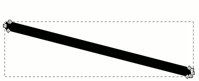
Séparation entre chemins ou un segment
Comment faire dans le cas ou une partie du chemin tracé est devenue indésirable ? On ne va surement pas le supprimer ou le refaire entièrement, ce serait faire un pas en arrière. Il y a bien plus simple, nous allons simplement couper la partie concernée. Bien sûr, si un segment entre deux points peut être coupé, il peut également être (re)tracé. Allez, au boulot :-° !
Pour commencer, il va falloir commencer par repérer les boutons qui nous seront utiles. Ceux-ci sont dans la barre des contrôles d'outils et voici leurs caractéristiques :
Icône
Appellation
Description de l'outil
Joindre les nœuds sélectionnés
En cliquant sur ce bouton, deux nœuds sélectionnés seront joints en un unique nœud. Ce nouveau nœud sera placé à "mi-chemin" des deux premiers.
Briser le chemin aux nœuds sélectionnés
En cliquant sur ce bouton, le nœud que vous avez sélectionné coupera le chemin en son emplacement. Ainsi, deux nouveaux nœuds sont créés (attention, ceux-ci seront superposés !).
Joindre les nœuds terminaux par un nouveau segment
En cliquant sur ce bouton, deux nœuds sélectionnés (aux extrémités de leurs chemins) seront joints par un nouveau segment.
Supprimer un segment entre deux nœuds non terminaux
En cliquant sur ce bouton, le segment reliant deux nœuds sélectionnés sera supprimé.
Intéressons-nous maintenant aux effets de chaques boutons. Vous comprendrez mieux leurs fonctionnalités en les essayant de vous-même. Si rien ne se passe en appuyant sur le bouton, c'est que vous n'avez pas sélectionné les bon nœuds au bon endroit. N'oubliez pas que vous pouvez annuler toute erreur avec les touches : CTRL + Z .
La théorie c'est bien. La pratique, c'est mieux :p . Bon, je vous rassure, ce n'est pas réellement une interrogation, mais plutôt un TP.
Ah ...
... et ce n'est pas noté.
Aaaaaaaaaah ! :D
:euh: Haem ! Quoi qu'il en soit, je vous propose de créer une signature (fictive) en utilisant tout ce que nous avons appris jusqu'à présent. Si vous êtes capable de remplir tous les critères suivants c'est que vous avez tout compris du tutoriel :
Forme de la signature suffisamment complexe, il ne s'agit pas de faire quelque chose de trop simple (aucun intérêt).
Traits séparés, ou autrement dit, il est nécessaire de lever son crayon au moins une fois lorsqu'il s'agit de la faire à la main.
Calligraphie : l'épaisseur du trait doit varier (il ne s'agit pas d'utiliser l'outil de calligraphie d'Inkscape non plus). Par exemple, il sera plus fin à l'endroit ou vous êtes censé lever le crayon.
Réalisme. C'est en fait la somme des critères précédents, mais il vous faudra vous creuser la tête pour imaginer correctement une signature. Je précise que la réflexion sur la forme des traits est primordiale pour avoir de bons rendus.
Voici, à titre d'exemple, ce que j'ai réalisé en suivant ces consignes:
J'ai cherché à réaliser un "V" en 3D tout en pensant à la trajectoire du crayon. On imagine aux endroits de traits fins que le crayon a été levé mais pas suffisamment (écriture rapide). L'épaisseur des traits varie aussi aux "tournants" (et aux boucles). Il n'y a rien de bien original, je compte sur vous pour faire mieux. ;)
Une dernière petite rubrique pour ajouter deux ou trois petites informations...
La vectorisation "automatique"
La vectorisation automatique, c'est le mal ! :diable: ... mais on a tous nos petites faiblesses, n'est-ce-pas ? :-° Prenons par exemple mon avatar de souris, que diriez vous si je vous disais que le line art est à l'origine une photo ? Et que, de plus, c'est Inkscape qui m'a mâché le travail ?
Pfff >_ !
Oui ! Vous me diriez exactement ça :lol: , et pourtant cette fonctionnalité est très utile ! Si votre dessin est directement bien tracé, pourquoi le refaire à zéro avec le logiciel ? Il ne peut pas le faire lui-même ? Eh bien si, et c'est d'ailleurs expliqué dans ce magnifique tutoriel de SpaceFox que je vous conseille de lire :
Oui, oui! Nous l'avons déjà vu, mais cela ne peut pas vous faire de mal d'en parler un peu plus ;) . Je vous suggère de repasser vos croquis avec des vecteurs d'une couleur vive, je le fais avec le rouge, dans le simple but de différencier les traits sans quoi cela peut vite ressembler à un gribouillage :euh: . De même, il faut voir plus loin que la vectorisation, il faut que vous pensiez à la coloration de votre dessin. Vos traits peuvent rester noirs mais vous pouvez opter pour la couleur qui sera celle de la forme coloriée. Voici, en exemple, comment j'ai procédé pour l'une de mes créations :
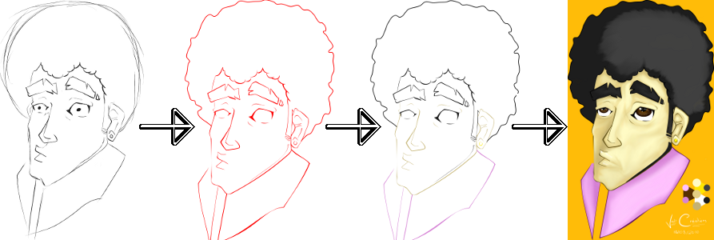
Évidemment, si vous ne souhaitez pas colorier votre dessin, autant le laisser en noir et blanc. Pour ceux qui ne savent pas colorier virtuellement leurs line art, ne vous arrêtez pas là ! Vous n'avez pas besoin de quoi que ce soit d'autre pour réussir vos colorisation avec Gimp : j'ai d'ailleurs réalisé un tutoriel à ce sujet. Ça se passe ici :D :
Félicitations ! Vous êtes parvenus à la fin de ce tutoriel et vous voilà fin prêt à réaliser des line arts de bonne qualité ! Ne désespérez pas si vous n'arrivez pas à réaliser des chefs d'œuvres du premier coup, ça vient en pratiquant. ;) De même, prenez le temps de modifier vos traits correctement même si ça peut paraître long ou encore pénible.
En tout cas, tout commence maintenant, bon courage à toutes et à tous !
Merci à camouss pour son aide tout au long de la rédaction de ce tutoriel.
P.S : N'hésitez pas à poster des commentaires ou des questions. Si je ne réponds pas dans "Commentaires", c'est pour ne pas remplir inutilement cet espace. En effet, je tâcherai de vous écrire par MP sur le SDZ en cas de problème. Je ne vais pas abandonner mes élèves, voyons. ;)

{kind=link}
{kind=link}
{kind=link}
{kind=link}
{kind=link}